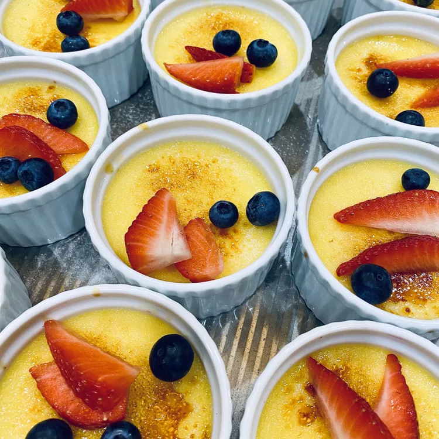

Creme Brulee

ingridients
- 4 egg yolks
- ¼ cup white sugar
- ¼ teaspoon salt
- 1 ⅔ cups heavy whipping cream
- 2 teaspoons vanilla extract
- 4 teaspoons white sugar
instructions
-
Whisk yolks with 1/4 cup sugar and salt in a bowl until smooth;
gently whisk in cream and vanilla extract. Strain custard mixture
into a liquid measuring cup.
-
Line bottom of a 6-quart oval slow cooker with a folded kitchen
towel to create a level surface so ramekins won't slide around.
Set four 4-ounce ramekins on the towel. Fill slow cooker with
enough water to come halfway up sides of ramekins.
-
Pour custard evenly into ramekins. Drape paper towels over top of
slow cooker liner to absorb any condensation during baking; cover
with lid to secure.
-
Cook on Low until custard is set but jiggles slightly, about 2
hours.
-
Transfer ramekins to a rack to cool completely, about 45 minutes.
Refrigerate custards, uncovered, until cold, at least 3 hours.
-
Sprinkle 1 teaspoon sugar over each ramekin and shake gently to
distribute evenly. Heat the sugar using a culinary torch until
melted and browned, about 1 minute.